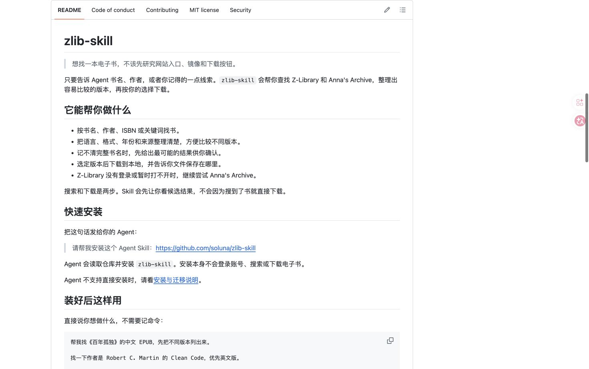
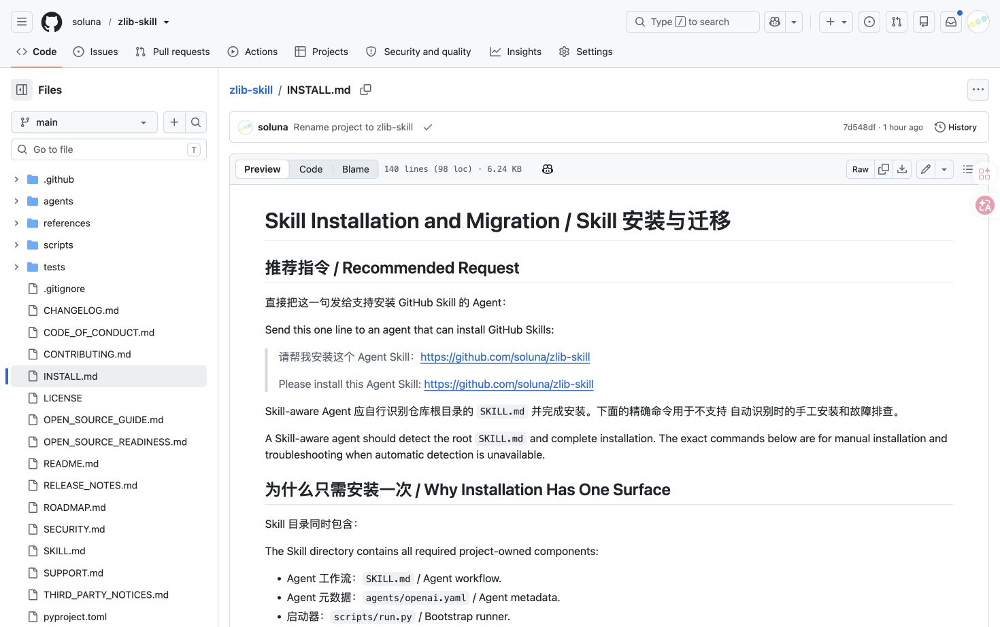
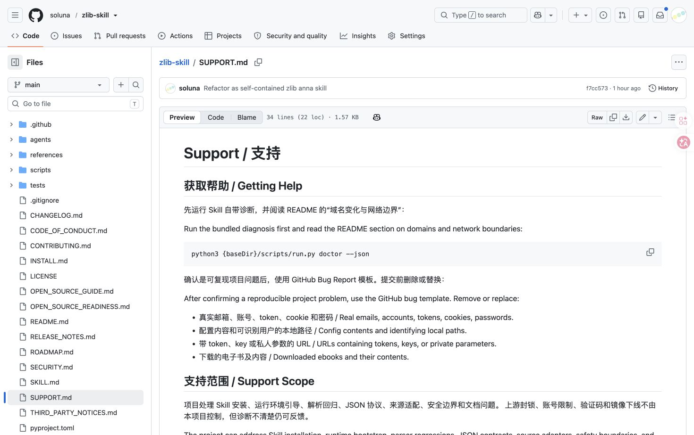

已经做对的事
- 用户可以直接说书名、作者、语言和格式，不必理解来源站点。
- 搜索与下载明确分开，避免“搜到即下载”的越权与误操作。
- “找到、已尝试、已下载”被区分，成功状态可信。
- 登录密码留在本机终端，文档持续提醒不要泄露凭据。
- README 先讲用户目标，再放安装细节，信息顺序合理。
Evidence-based experience audit
无账号 Z-Library 搜索、双来源地址轮换和代理 fake-IP 兼容已经落地并通过真实复核；首次准备反馈、诊断语义和面向普通用户的恢复文案仍是下一批重点。
复核后的整体体验健康度：可用但仍有风险。核心无账号搜索已恢复，剩余问题主要集中在等待反馈、诊断语义和故障恢复。
{baseDir}、--json、代理环境变量等内部概念。doctor 在所有来源不可用时仍返回顶层 ok: true，容易误导 Agent。修复复核（2026-08-07）：隔离配置、无账号、未开启私网放行时，doctor 显示两来源均可搜索；联合搜索得到 6 条候选。Z-Library 前两个域名在实际搜索阶段失败后自动切到第三个域名，证明后备链不只停留在健康检查。
采用端到端体验地图、启发式审计、可访问性风险检查和真实命令走查。评估对象包括仓库入口、安装文档、Skill 指令、执行器输出和支持路径。
从“我想找一本书”走到“正确文件已保存且我知道在哪里”。
首次安装、无账号、信息不完整、多个版本、来源不可用、下载失败。
本次打开的 3 个文档页面、隔离配置下的 6 组命令输出和实现代码。
可发现性、清晰度、等待感、信任、错误恢复、选择质量、可访问性。
横向阅读完整旅程。健康度描述的是本次审计环境，不代表所有网络、账号或 Agent 的普遍结果。
run.py。search --source all。download result_id、Agent 回复。截图来自本次审计中实际打开并核验的 GitHub 页面；命令数据来自隔离的运行目录和配置目录，没有读取现有账号，也没有下载文件。

README 首屏先回答“能做什么、如何安装、装好后怎样说”，任务导向清楚。中英文完整重复使页面整体长度接近翻倍。

推荐请求保持一句话，方向正确；手动路径同时承载安装、验证、迁移、环境和验收，普通用户需要自行判断所处场景。

安全提醒完整，但可复制命令仍包含 {baseDir}；文档要求阅读 README 中并不存在的“域名变化与网络边界”小节。
RUNNER_COMMAND 在执行器中被固定为 python3 {baseDir}/scripts/run.py，因此占位符会进入真实错误建议。~/Books，但 README 与 Skill 没有形成明确的默认行为约定。ZLIB_SKILL_*，README 实际没有列出这些变量。| 状态 | 结果 | 体验含义 |
|---|---|---|
--help（干净运行目录） | 9.34 秒；先显示 “Preparing…” | 查看帮助也触发依赖准备，且没有阶段反馈。 |
auth status --json | 0.26 秒；无 token | 隔离配置工作正常，没有读取既有账号。 |
doctor --json（修复前） | 2.46 秒；两个来源均 unavailable；顶层 ok: true | 保留为诊断语义问题的基线证据。 |
doctor --json（修复后） | Z-Library anonymous、Anna 200；两者 can_search: true | 无账号核心入口恢复，且未开启普通私网放行。 |
search ... --source all（修复后） | 6 条候选；Z-Library 3、Anna 3 | 两个来源都真正完成了搜索，而非只通过健康检查。 |
| 地址切换复核 | Z-Library 前两个域名搜索失败，第三个成功；Anna 预置 .gl/.pk/.gd | 运行时故障切换已成立；不是单一硬编码地址。 |
| Anna 网络检查 | annas-archive.gl → 198.18.2.231，修复后 200 | 只对可信 HTTPS 来源接受代理 fake-IP；普通私网仍被测试证明会拒绝。 |
| 非法年份范围 | INVALID_FILTER，recoverable | 输入错误分类清楚，是值得保留的模式。 |
P0 表示本次环境中阻断核心任务；P1 表示显著影响成功率或信任；P2 表示结构性摩擦和可访问性风险。
修复采用窄范围信任：Z-Library 支持匿名搜索并合并域名发现结果，Anna 轮换官方三个地址；只有可信 HTTPS 主机可接受 198.18.0.0/15 fake-IP，普通私网、字面 IP 和陌生重定向仍被阻止。
干净运行目录下 --help 用时 9.34 秒。用户只看到一句 “Preparing the zlib-skill runtime...”，不知道是在建环境、装依赖、验证，还是已经卡住。真实网络较慢时，最长准备超时可到 300 秒。
错误与支持文档向用户暴露 {baseDir}、--json、ANNAS_BASE_URL、HTTPS_PROXY 等内部术语；搜索失败还默认建议登录 Z-Library，与“不会为了更多结果要求登录”的叙事形成冲突。
在两个来源都不可用时，doctor 仍返回顶层 ok: true。这对协议层或许表示命令完成，但 Agent 很容易把它解释为系统健康，或者需要遍历深层 sources 才能得出真实结论。
Z-Library 结果已补充标识符（含 ISBN）、出版社、版次和页数，真实候选可以区分初版与第三版；Anna 的 HTML 结果仍只有基础字段。当前也没有统一的“字段缺失/可信度低”提示。
SUPPORT 要求阅读 README 的“域名变化与网络边界”，但 README 没有该小节；INSTALL 要求迁移到 README 列出的 ZLIB_SKILL_*，README 也没有相应列表。文档分别都像是完整的，跨文档旅程却断开了。
实现默认写入 ~/Books，README 示例却总是显式指定 Downloads；Skill 的下载模板要求传入目录，但没有说明用户未指定时该问一次还是使用默认值。不同 Agent 可能给出不同体验。
README、INSTALL、SUPPORT 采用中英逐段重复，屏幕阅读器会连续朗读两种语言，页面长度也接近翻倍。人类搜索表固定 110 列、标题和作者直接截断，没有换行或省略提示；窄终端和放大场景难以比较。
本次修复没有整体放宽 URL 检查。它只允许可信内置来源的 HTTPS 主机使用 198.18.0.0/15 代理 fake-IP；普通私网、localhost、字面非公网 IP 与未获信任的跳转继续拒绝。这一边界已由独立回归测试覆盖。
本节只能报告从页面结构、文案和终端格式中可见的风险，不能据此声称符合或不符合完整 WCAG。
先修核心可用性与错误语义，再提升选版质量，最后用真实用户研究校准。每一项都尽量给出可验证的完成标准。
-h/--help 和顶层无参数输出不触发运行环境准备。{baseDir}；修复 SUPPORT 与 INSTALL 的失效引用。overall_status、usable_source_count 与结构化 next_actions。| 改进主题 | 建议验收标准 |
|---|---|
| 首次准备 | 干净环境执行 --help 在 500ms 内返回；真实任务每 10 秒内至少出现一次可理解的状态更新。 |
| 核心搜索 | 当前环境已达成成功路径：无账号双来源搜索成功，且 Z-Library 在搜索阶段自动切换失效域名；仍需补充所有地址失败时的专门错误语义。 |
| 诊断语义 | 两个来源都不可用时，overall_status = "unusable"；Agent 不需要推断深层字段即可准确总结。 |
| 恢复建议 | 所有用户可见输出不再包含 {baseDir}；自然语言用户无需复制 JSON 命令完成标准恢复。 |
| 候选选择 | 同名多版本测试集中，用户能在不打开来源站点的情况下正确选择目标版本；缺失元数据被显式标注。 |
| 文档 | 自动检查本地链接和锚点；README、INSTALL、SUPPORT 之间没有失效引用。 |
当前审计能找到结构问题，但无法代替真实用户。建议用 5–7 名目标用户做短程任务测试，覆盖熟悉命令行与完全不熟悉的两组。
以下内容没有在本次审计中直接验证，报告已将相关阶段标为“未验证”或“风险”。
# 隔离运行目录与配置目录；无登录、无下载 python3 scripts/run.py --help python3 scripts/run.py auth status --json python3 scripts/run.py doctor --json python3 scripts/run.py search "Pride and Prejudice" \ --source all --ext epub --lang en --limit 5 --json